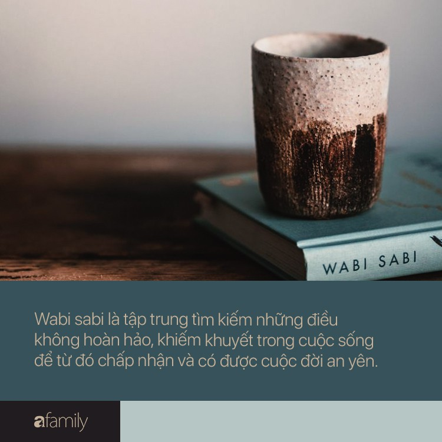

Giảm 15% cho mỗi đơn đặt hàng dịp giáng sinh !!!
Địa điểm
828 Sư Vạn Hạnh, Phường 13, Quận 10, TP.HCM
Giờ mở cửa
8.00am - 22.00pm
Wabi Sabi – Thương Những Điều Không Hoàn Hảo
Càng chìm đắm trong lối sống tiêu thụ, trong dư dả vật chất thì càng có nhiều người muốn quay về cuộc sống tối giản, nguyên bản và gần gũi hơn với thiên nhiên. Bạn có khi nào chậm lại một phút và nhận ra mình đã lao đi quá nhanh mà không kịp tận hưởng những điều nhỏ bé tốt đẹp của thế giới tự nhiên?
Đọc cuốn sách Wabi Sabi – Thương Những Điều Không Hoàn Hảo của Beth Kempton để nhận biế giá trị của một lỗi sống đơn giản, chậm rãi và thuận tự nhiên.
Beth có bằng thạc sĩ tiếng Nhật, đã dành nhiều năm sinh sống và làm việc tại đất nước mặt trời mọc – nơi cô xem như quê hưởng thứ hai của mình. Sống tại Nhật Bản, được trải nghiệm cắm hoa, gấp giấy, làm gốm, thư pháp, trà đạo, Beth càng nuôi lớn trong mình tình yêu và sự thấu hiểu nền văn hóa thú vị này.
Beth Kempton còn là tác giả của nhiều bài viết giá trị về du lịch, văn hóa cho các tạp chí Wanderlust, Yoga Magazine hay Where Woman Create. Sách Wabi Sabi – Thương Những Điều Không Hoàn Hảo của cô đã được dịch ra hơn 20 thứ tiếng.
Nội dung cuốn Wabi Sabi
Wabi sabi được ghép từ hai từ riêng biệt – wabi là khám phá cái đẹp trong sự đơn giản, là tách biệt khỏi thế giới vật chất để tìm thấy bình yên trong tâm hồn; sabi là dòng chảy thời gian, là quá trình sinh diệt và lão hóa tự nhiên của vạn vật. Hai từ này đều liên quan đến giá trị thẩm mĩ, là một phần của văn học, văn hóa và tín ngưỡng Nhật Bản.
Wabi sabi có thể coi là một triết lý sống. Triết lý này ưu tiên mối quan hệ của con người với thiên nhiên, dạy chúng ta biết chấp nhận tính ngắn ngủi, vô thường của cuộc đời và vì thế khuyến khích chúng ta trải nghiệm cuộc sống bằng mọi giác quan.
Wabi sabi là biết rõ và chấp nhận những sự không hoàn hảo của cuộc sống này. Chủ nghĩa hoàn hảo đôi khi là thứ ta cần phải biết buông bỏ, để sống một cuộc đời nhẹ nhàng, yêu thương bản thân mình và những người xung quanh bằng cách yêu luôn những điều không hoàn hảo.
Trích dẫn từ cuốn Wabi Sabi
“Vào một buổi sáng tháng Giêng xám xịt, khi đang trên đường đến thư viện Bodleian ở Oxford để thực hiện một số nghiên cứu cho cuốn sách này, tôi nhìn lên và thấy không chỉ một mà là hai dải cầu vồng trên bầu trời. Đứng chôn chân tại chỗ, tôi nhìn chằm chằm đầy kính ngưỡng vào món quà ấy, một thứ mà bản thân chưa từng được thấy bao giờ.
Khi ngắm nhìn, tôi có thể thấy nó đang thay đổi, lúc đậm lên, lúc mờ đi. Một cậu thiếu niên cắm cúi bước lại và gần như va vào tôi, bởi cậu vẫn đang mải tập trung vào chiếc điện thoại trên tay. “Nhìn kìa”, tôi nói, gõ nhẹ vào cánh tay cậu và háo hức chỉ lên. “Ôi chao”, cậu thốt lên, và quay sang đứng cạnh tôi, hai người xa lạ bỗng cùng chia sẻ khoảnh khắc hoàn hảo của chiếc cầu vồng đôi. Hai phút sau nó biến mất.
Thiên nhiên là ngôi nhà của phép màu. Quá trình phát triển phức tạp, những câu chuyện về sức bật tinh thần, vẻ đẹp phù du xuất hiện rồi lại tan biến. Khi chúng ta dành thời gian để dừng lại ngắm nhìn, mỗi món quà ấy lại gợi nhắc chúng ta chú ý đến những vẻ đẹp thoáng qua trong cuộc sống của chính mình.”
Nhận xét về cuốn Wabi Sabi
Ngay bìa sách Wabi Sabi – Thương Những Điều Không Hoàn Hảo đã cho chúng ta một cảm giác nhẹ nhàng, dễ chịu và bình an với sắc xanh của bầu trời và bông hoa cúc bé nhỏ bị khuyết đi vài cánh.
Sách viết đơn giản, chậm rãi, nhắc nhở chúng ta biết tìm kiếm, nhận ra và rung động trước vẻ đẹp dung dị của cuộc sống thường ngày. Sách chẳng đưa cho chúng ta những công cụ cao siêu, những bí mật hay bí quyết thần thành, wabi sabi chỉ đơn giản là một sự tỉnh thức từ sâu trong trái tim để ta thực sự hòa mình vào thiên nhiên, vũ trụ và gắn kết nhiều hơn với những người xung quanh.
Sách Wabi Sabi – Thương Những Điều Không Hoàn Hảo có bố cục mạch lạc, dễ theo dõi. Vì là tác giả chuyên viết bài du lịch, trải nghiệm nên cuốn Wabi Sabi – Thương Những Điều Không Hoàn Hảo của Beth Kempton cũng giống như một cuốn sách cho chúng ta dạo chơi trong thế giới tâm hồn.
Lời kết
Bí quyết quan trọng nhất để chúng ta tận hưởng cuộc sống một cách trọn vẹn là chấp nhận những mặt không hoàn hảo, những sự kiện bất như ý, thương yêu cuộc sống như những gì mà nó vốn là. Hãy đọc sách Wabi Sabi – Thương Những Điều Không Hoàn Hảo để sống chậm hơn, sâu hơn và an yên hơn mỗi ngày bạn nhé.
{kind=link}
{kind=link}